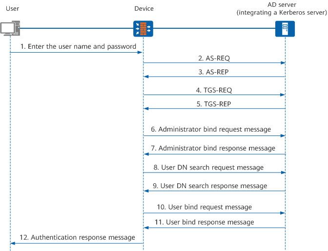

AD Authentication and Authorization Process
In AD authentication and authorization, an access device functions as an AD client to collect user information, including user name and password, and sends the information to an AD server. An AD server integrates a Kerberos server, and a Kerberos server consists of an AS and a TGS. The AD server implements user authentication and authorization according to the user information sent by the AD client.
In AD authentication, before receiving an administrator bind request packet, the AD client exchanges AS-REQ, AS-REP, TGS-REQ, and TGS-REP with the Kerberos server integrated in the AD server, to obtain the ticket used to access the AD server and the session key used by the AD client and server. During user binding, the AD client and server encrypt user passwords using the ticket and session key. This password encryption process improves authentication security.
Figure 1 shows packet exchange between the user, AD client, and AD server.
Figure 1 Packet exchange in AD authentication and authorization
The packet exchange process in AD authentication and authorization is as follows:
- When accessing the AD server, a user sends the user name and password to the AD client to initiate authentication.
- If the AD client accesses this AD server for the first time, the Kerberos server integrated in the AD server needs to authenticate the client. The client sends an AS-REQ carrying the user name in plain text to the Kerberos server.
- The Kerberos server searches for the user in the database according to the user name.
If the user is found, the AS server generates a session key used between the Kerberos server and client. In addition, the AS server generates a ticket. The AD client uses this ticket to request for a ticket of access to the AD server from the Kerberos server. In this case, the AD client does not need to be authenticated. The AS server returns an AS-REP to the client. The ticket in AS-REP is encrypted by using the key between AS and TGS, and then the encrypted ticket and session key are encrypted again using the client's password.
- The AD client uses its own password to decrypt the AS-REP to obtain the session key and encrypted ticket.
The AD client sends a TGS-REQ to the Kerberos server to request for the ticket used to access the AD server. The TGS-REQ contains the authenticator, encrypted ticket, client name, and AD server name. Authenticator refers to the information, such as client's user name, client's IP address, time, and realm, encrypted using the session key.
- The Kerberos server decrypts the ticket using the key between AS and TGS to obtain the session key from the ticket, and then decrypts the authenticator using the session key. If the Kerberos server verifies that the client name and time in the authenticator are the same as those in the ticket, the authentication is successful. Then the Kerberos server returns a TGS-REP encrypted using the client password to the client. The TGS-REP contains the session key used by the client and AD server and the ticket encrypted using the AD server password.
The ticket contains the session key, client name, server name, and ticket validity period. The Kerberos client uses its own password to decrypt the TGS-REP and obtain the session key used between the client and AD server and the ticket encrypted using the AD server password. The ticket can be used to access the AD server.
Steps 6-12 are similar to steps 2-8 in LDAP Authentication and Authorization Process. The difference is that in step 10 of Figure 1, the user password is encrypted and authenticated using the session key and ticket. This improves authentication security:- In step 10, the user bind request packet contains an authenticator and a ticket. In the authenticator, the user name and password are encrypted by the AD client through the session key. The ticket is encrypted using the AD server password and can be used to access the AD server.
- After receiving the user bind request packet, the AD server uses its own password to decrypt the ticket, and checks the ticket validity period. If the ticket does not expire, the AD server uses the session key in the ticket to decrypt the authenticator, processes the user bind request packet, and verifies the password entered by the user.